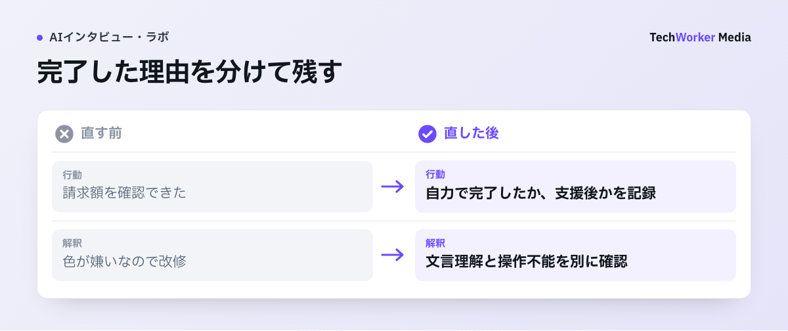

AIインタビューで試作品の使いやすさを評価するには、何を記録すればよいですか？
タスク、行動、発話、改修判断を同じ記録で扱い、AI要約は元記録で確かめてから改修を決めます。
試作品の感想だけでは、次に直す場所は決まりません。AIインタビューでは、タスク、行動、発話、改修判断を、同じ記録で扱います。
要点は3つです。
- タスクには、画面内の用語や正しい操作を含めません。利用場面とゴールだけを渡します。
- AI要約は、元記録に戻って確認してから、改修指示にします。
- アクセシビリティは、別の評価軸で見ます。少数の障壁を市場全体の割合へ変換しません。高リスクの領域では、専門家レビューを別に行います。
試作品の評価は、どんな手順で進めればよいですか？
達成したい行動を決め、証拠を四欄に分け、AI要約を元記録で確かめ、改修へ渡して再テストします。

請求額を探すタスクで、担当者が場所を教えてから完了した場合は「支援後の完了」と残します。自力で見つけた参加者と同じ成功欄にまとめません。改修案には、どの画面で、どんな支援が必要だったかを添えます。これは評価ログの設計例で、完了率の実測ではありません。
手順1：先に達成したい行動を決める
利用者の目的を決めます。「請求書を確認する」のように、誘導しないタスクを置きます[1]。AIには中立に聞き返させ、原因を先回りさせません。
タスク文には、画面内の用語や正しい操作を入れません。「左のメニューから設定を開いてください」では、ナビゲーションが見つかるかを試せなくなります。「来月の請求額を確認したいとき、どこから始めますか」のように、利用場面とゴールだけを渡します。
参加者が途中で「何をすればよいですか」と尋ねた場合も、正解を教えた回数を、行動ログへ残します。支援後に完了したことと、自力で完了したことを、同じ成功として数えないためです。
一つのセッションに、目的の異なるタスクを詰め込みすぎないことも大切です。初回登録、検索、支払いのように必要な前提が異なる操作は、途中の失敗が後続タスクへ影響します。
調べたい論点ごとに、開始画面を固定します。同じ版・同じタスクで比較できる条件を、先に決めます。AIの追問は自由にしても、比較の軸は変えません。
手順2：証拠を四つの欄に分ける
評価ログは、AI要約だけを残さず、提示条件、行動、発話、解釈と処置の四つに分けます。各欄に残すものは、後段の表にまとめました。
画面記録は、操作と発話を照合する材料です[2]。範囲・保存先・利用目的を同意時に明示します。必要なければ、匿名化した試作品を使います。
たとえば「見つけにくい」という発話があったとします。画面記録で、検索を試していたのか、メニューを往復していたのか、表示内容を読んで止まったのかを確認します。
画面で起きた事実と、本人がそう解釈した理由は、どちらか一方だけでは改修に不足します。発話が少なくても、迷いなく別経路で完了した参加者は、現在の導線の代替行動を示す材料になります。
四欄は、AIの自動要約を否定するためのものではありません。要約には、「どのタスクの、どの時点の、どの発話に基づくか」を戻せる参照を付けます。解釈欄は、確定事実とみなさず仮説として扱い、修正後に再テストする対象を選びます。
手順3：AI要約を元記録で確かめてから、改修指示にする
AIは論点を速く集められますが、「利用者は設定画面を嫌った」を改修指示にしてはいけません。元記録へ戻り、停止、別経路での完了、説明不足と操作不能を分けます。
Listen Labs掲載の、カリフォルニア芸術大学の事例があります[5]。Figma（デザインツール）の試作品の操作記録、追問、動画、文字起こしを組み合わせています。AIは、研究者や設計判断を置き換えません。
改修候補を選ぶときは、タスクの目的への影響を見ます。要望の多さは、選ぶ基準にしません。
ある参加者が「色を変えてほしい」と言っても、実際には、次の操作を示す文言を理解できなかったのかもしれません。見た目の好み、理解の誤り、操作不能、対象外の要望を分けると、デザイナーや開発者が修正できる問いになります。重要な不一致は、別の参加者にも同じタスクを試してもらい、再現する障壁かを確かめます。
手順4：アクセシビリティは別の評価軸で見る
操作が完了した人だけを見て「使いやすい」と結論づけると、支援技術や端末による障壁を見落とします。W3Cは、障害のある利用者を継続的に含め、少数の評価を一般化しないよう勧めています[4]。
利用者評価は、WCAG（ウェブのアクセシビリティ指針）への適合の証明にもなりません。
支援技術を使う参加者がいる場合、タスクを短くすることだけで、負担を解決したと判断しません。使用している支援技術、端末設定、参加者が普段使う操作方法を、本人の同意の範囲で記録します。
そこで見つかった障壁は、通常のUI改善と分けて、技術基準・専門家確認へ渡します。AIによる会話の速さを理由に、観察やアクセシビリティ検証を省略しません。
手順5：1回の調査を次の改修へ渡す
終了時には、版、タスク、結果を一枚にまとめます。改修候補には、画面時刻・発話・再テストを付けます。
改修後は、同じタスクを別の参加者がどう達成するかも見ます。同じ参加者から感想を取り直すことに加えて行います。障壁が消えたのか、別の場所へ移っただけなのか、関係ない人の操作を悪化させていないかを分けるためです。
AIインタビューは、この反復の記録と追問を速くできます。設計上の意思決定を自動化する道具ではありません。
CoeSignal（株式会社TechWorkerが提供するAIインタビュープラットフォーム）では、調査設計と実査を相談できます。
試作品評価で、うまくいかなくなるのはどんなときですか？
タスク文で答えを教えたとき、要約をそのまま改修指示にしたとき、完了者だけで判断したときに崩れます。
- タスク文に操作を書く。「左のメニューから設定を開いてください」と書くと、ナビゲーションが見つかるかを試せません。
- 支援後の完了も成功に数える。正解を教えた回数を残さないと、自力での完了と区別できません。
- 目的の異なるタスクを詰め込む。途中の失敗が、後続タスクへ影響します。
- 要約をそのまま改修指示にする。「利用者は設定画面を嫌った」では、停止、別経路での完了、説明不足と操作不能が分かりません。
- 要望の多さで改修候補を選ぶ。「色を変えてほしい」の裏に、文言の理解不足があるかもしれません。
- 完了した人だけを見て使いやすいと結論づける。支援技術や端末による障壁を見落とします。
適用の限界もあります。AIインタビューと画面記録は、少数の障壁を市場全体の割合や売上影響へ変換するものではありません。高リスク領域では、実利用環境、専門家レビュー、基準適合の確認を別に行います。
評価ログの四つの欄には、何を残しますか？
提示条件、行動、発話、解釈と処置の四欄に分け、解釈は確定事実とみなさず仮説として扱います。
| 欄 | 残すもの |
|---|---|
| 提示条件 | 試作品の版、端末、タスク文 |
| 行動 | 到達・中断・戻るなどの事実 |
| 発話 | 理解・期待・迷いの原文 |
| 解釈と処置 | 仮説、改修案、再確認条件 |
よくある質問
画面内の用語や正しい操作は入れません。「来月の請求額を確認したいとき、どこから始めますか」のように、利用場面とゴールだけを渡します。正解を教えた回数は、行動ログへ残します。
提示条件、行動、発話、解釈と処置の四つを分けて残します。AI要約に加えて、どのタスクのどの時点の発話に基づくかを戻せる参照を付けます。解釈は確定事実とみなさず、仮説として扱います。
操作が完了した人だけを見て、使いやすいと結論づけません。別の評価軸を置きます。支援技術や端末設定は、同意の範囲で記録します。利用者評価はWCAG適合の証明にならないため、技術基準・専門家確認へ渡します。
次の一歩は何から始めればよいですか？
次の調査で、利用場面とゴールだけのタスク文を作り、評価ログを四欄に分けて記録します。
- 利用場面とゴールだけのタスク文を作ります。
- 評価ログを、提示条件・行動・発話・解釈と処置の四欄に分けます。
- 改修後は、同じタスクを別の参加者にも試してもらいます。
出典：一次情報と確認範囲
確認日：2026年9月17日。製品仕様・制度は更新されるため、導入時はリンク先の最新版を再確認してください。海外の制度・職業規範は日本へ直接適用せず、相違点と限界を本文に明記しています。